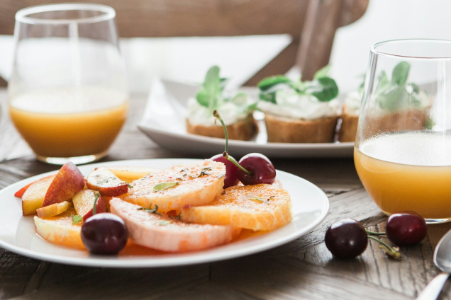
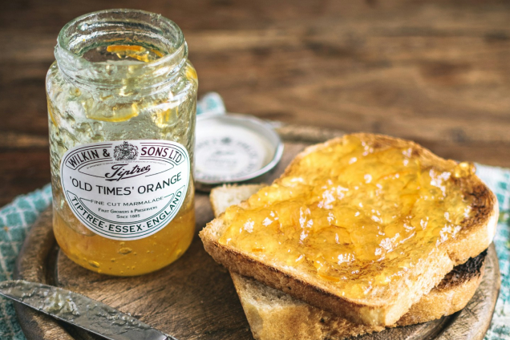

說到台南，除了琳瑯滿目的在地小吃，更是有許多美味又盛的台南早午餐，每一家都有其獨特的風格，無論是文青老屋風、美式或日式都有！今天小編要推薦4家超人氣台南早午餐，快來筆記筆記！台南許多熱門的早午餐店都隱身在巷弄內，且都是由老宅改造，一家比一家厲害，實在是竸爭激烈呀～如果在台南停留的天數有限，不妨參考小推薦的這 4 家，現在就把這篇加入囗袋名單，下次不用再選擇障礙啦!

就算以小吃為重，不吃早午餐的旅人，也很難沒聽過小北家灶咖！營業期只要經過就是在排隊，如此超高人氣必定有它獨有的魅力！小北家灶咖為老宅改建 (推薦給你：台南便宜青旅大公開)，店內圍繞綠色樐栽,環境悠閒放鬆；餐點的部分會由店員細細解說，每一口都能吃到店家堅持選用好食材的用心與溫度，愜意的早晨坐在悠閒的老宅裡享用美味的早午餐，別有一番風味啊~

白天主打早午餐、晚上賣深夜甜點！鹿耳晚晚擁有大片落地窗，整個空間寬敞舒適又有超棒的採光 (可以輕鬆地將餐點拍得很漂亮XD)，超級文青的呀！提供的餐點很多元又美味，可以單點漢堡、帕尼尼或是選擇方案升級成豐盛的早午餐盤餐，來到這裡沒有用餐時間限制，只管放鬆吃飯就好！